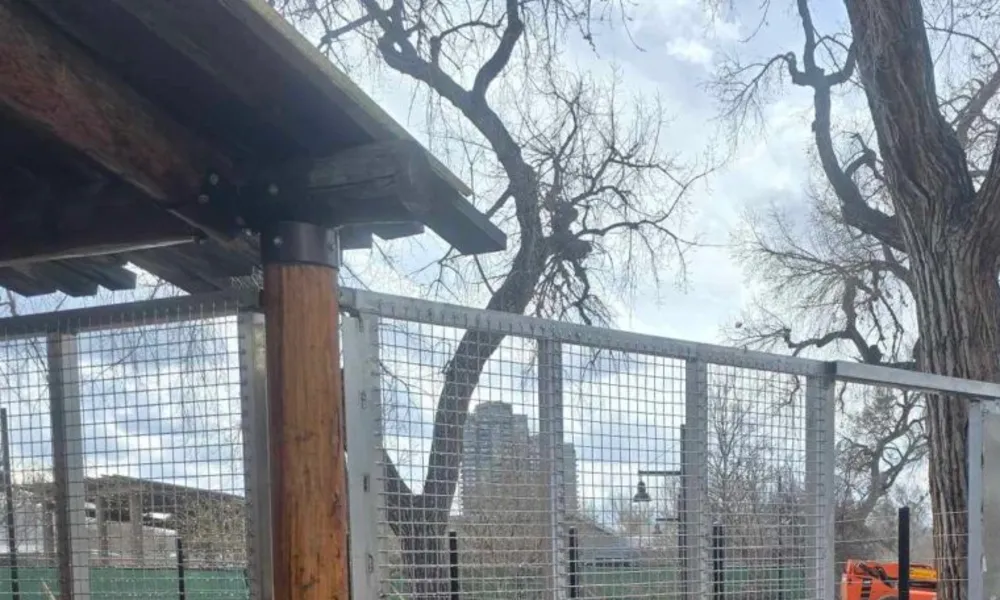

Designing a zoo enclosure is far more complex than creating a space that simply prevents animals from escaping. Every enclosure must support the health and welfare of the animals, provide a safe working environment for zoo staff, withstand years of continuous use, and deliver an engaging experience for visitors.
Unfortunately, many enclosure problems begin long before construction starts. Decisions made during the planning and design stages can affect maintenance costs, operational efficiency, and even animal welfare for decades. Fortunately, most of these issues are avoidable with proper planning and engineering.
On a new zoological facility or an upgrade to an existing habitat, the same pitfalls tend to recur. Here are ten common mistakes to avoid when designing modern zoo enclosures.
1. Designing the Enclosure Before Understanding the Animal
The biggest mistake is drawing the structure first and fitting the animal to it afterward. Every species brings its own physical abilities, behaviours, and environmental needs, so a habitat built for a tiger has almost nothing in common with one for primates, elephants, reptiles, or birds. Start from the animal instead: understand how it moves, how it uses its space, and how keepers will manage it day to day — then design to that.
2. Choosing the Wrong Containment System
Not every barrier suits every species. Mesh size, wire thickness, structural support, and overall layout should follow the animal's behaviour, not the lowest quote — because the wrong containment system quietly costs you later in extra maintenance and reduced safety.
3. Overlooking Keeper Safety
Keepers are in and around the enclosure every single day — feeding, cleaning, inspecting, running veterinary procedures — and all of it needs safe access. Well-placed keeper doors, shift gates, protected-contact systems, and holding areas let them do that work without unnecessary risk. Design those systems in from the start; bolting them on afterward almost never works as well.
4. Ignoring Future Maintenance
An enclosure that looks impressive on opening day should still perform efficiently ten or twenty years later. Poor maintenance access often leads to longer downtime and higher operating costs.
Features such as removable mesh panels, accessible service corridors, corrosion-resistant finishes, and modular components make routine maintenance significantly easier.
5. Underestimating Structural Requirements
Large animals put real force into everything around them, and without properly engineered structural steel framing, even top-quality mesh and gates end up carrying stress they were never meant to take. The structural engineering has to be part of the design from day one — never something you sort out once the layout is already fixed.
6. Forgetting Environmental Enrichment
A good habitat pushes animals to explore, climb, forage, and do the things their species would do in the wild. An enclosure without enrichment can tick every containment box and still fail the animal on animal welfare — which is exactly why the best facilities plan enrichment from the first sketch rather than as a later add-on. The payoff shows up twice: healthier animals, and far more engaging exhibits for visitors.
7. Using Standard Designs for Every Species
There is no universal enclosure design. Each habitat should be customized according to:
- Animal behavior
- Veterinary needs
- Keeper workflow
- Exhibit objectives
- Future expansion plans
Custom fabrication often produces safer and more efficient results than adapting generic designs.
8. Neglecting Corrosion Protection
Enclosures sit outdoors year-round, and the mix of moisture, humidity, wash-down chemicals, and animal waste eats unprotected steel alive. The right protective coating — specified during fabrication, not patched on later — is what turns years of service into decades while keeping maintenance bills down.
9. Failing to Plan for Growth
Zoos continue to evolve. Habitats expand, management practices change, and new enrichment systems are introduced. Designing with flexibility allows future upgrades without major reconstruction.
10. Treating Every Component Separately
The most common mistake of all is treating the mesh, doors, gates, structural steel, and holding equipment as separate purchases from separate suppliers. The safest, most efficient enclosures are designed as integrated systems, with every component engineered to work with the ones around it — and that is what actually improves safety, simplifies daily operations, and holds up over decades of use.
Better Planning Creates Better Habitats
Successful zoo enclosure design requires collaboration between engineers, fabricators, architects, and animal care professionals. By avoiding these common mistakes and investing in thoughtful planning, zoological facilities can create habitats that are safer, easier to maintain, and better suited to the animals that live within them.
A well-designed enclosure is not simply a structure — it is a long-term investment in animal welfare, operational efficiency, and public safety.
Frequently Asked Questions
What is the most common mistake in zoo enclosure design?
Treating components such as mesh, doors, gates, and structural steel as separate purchases instead of one integrated system. When parts are not engineered to work together, safety gaps and operational headaches follow.
How do design mistakes affect animal welfare?
Poorly planned enclosures can limit natural behavior, increase stress, and make daily care harder, which affects animal health over time. Thoughtful layout, enrichment, and retreat space are as important as containment.
Can enclosure design mistakes be fixed after installation?
Some can, but retrofitting is almost always more expensive and disruptive than getting the design right upfront. Structural and containment errors in particular are costly to correct once an enclosure is in service.
How can zoos avoid costly design errors?
Involve engineers, fabricators, and animal care staff early, plan keeper and veterinary workflows from the start, and choose an experienced fabrication partner. Most expensive mistakes trace back to skipping collaboration in the planning stage.
Is material choice a design decision?
Yes. Selecting the wrong metal or under-specifying mesh for a species is a design mistake that shows up as premature corrosion, damage, or safety risk. Material selection should be matched to the animal and the environment.